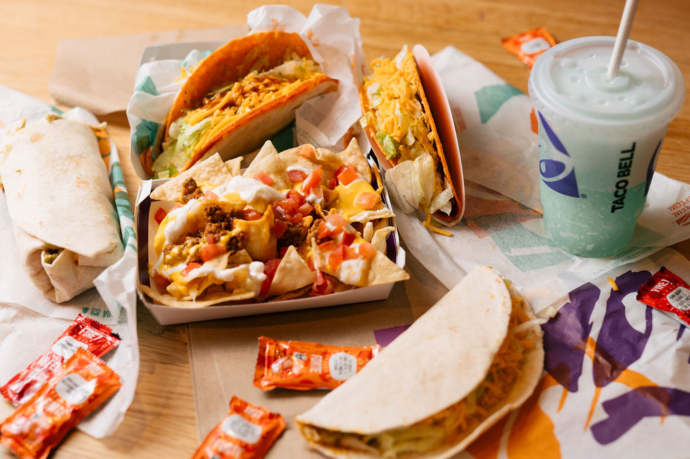

TacoBell

Description
This is a dish created in Japan, but has spread across the entire world.
Its variety of combinations of ingredients keeps its taste fresh and leaves you wanting more.
The range of its quality can range from low to very high depending on freshness of ingredients and chef experience
The main ingredients found in all (maki rolls) sushi are the seaweed, short grain rice and of course the soysauce and wasabi to go with it.
From there you can add all sorts of ingredients. For example, the California roll has cucumber, imitation crab and avocado.
You will also find all sort of raw (or cooked) fish on your rolls. Other ingredients are: breaded crab, mango, cream cheese, fish eggs... and so on.
For this recipe, we will be making a california roll.
Ingredients
- 2 Cups Japanese short/medium grain rice
- 2 to 2+1/2 cups of cold water
- 5 Tbsp Sushi Vinegar (Can be made by hand)
- 1/2 lb imitation crab meat
- 1 ripe, firm avocado
- Toasted Nori Seaweed
- Toasted Sesame Seeds
- Sushi rolling mat + plastic wrap to cover
- Soy sauce
- Wasabi
Steps
- Cook rice and stir in sushi Vinegar
- Wrap mat in plastic wrap (for reusablity)
- split nori in half
- Toast Sesame seeds
- Slice vegetables and crab meat
- spread generous amount of rice onto nori (use wet fingers to prevent sticking)
- Flip rice covered nori around (rice down) and place filling across nori (don't overfill)
- Use mat to roll (keep sushi in place, apply pressure)
- Sprinkle sesame seeds and roll around to collect seeds
- Cut in half with damp knife and then cut into 1 inch rolls
- Eat your delicious meal
Back to Recipes